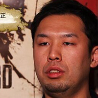

Hidetaka Miyazaki
Elden Ring
Hidetaka Miyazaki will talk about their new game Elden Ring one of the most anticipated game this year. (宮崎 英高, Miyazaki Hidetaka, born c. 1975) is a Japanese video game director, designer, writer, and company president of FromSoftware. He originally joined the company in 2004 as a game designer for the Armored Core series, later becoming known for creating the Souls series, starting with Demon's Souls in 2009. Other games he has worked on include Bloodborne,Dark Souls and Sekiro: Shadows Die Twice.
|
President of FromSoftware
|
Morimasa Sato
Resident Evil Village
Morimasa Sato will talk about Resident Evil Village, an new survival horror game developed and published by Capcom. It will be the tenth major installment in the Resident Evil series. Morimasa Sato is a Capcom developer who worked on Resident Evil 7: Biohazard. Sato was tasked with explaining the character and giving him a role in the game. He came up with Jack Baker's stalking of the player and having regenerative abilities to let him appear again and again. Some of his actions were inspired by Jack Torrance as played by Jack Nicholson in Stanley Kubrik's The Shining. The character's first name is in honour of both the actor and character.
|

Game Designer at Capcom
|
Harri Tikkanen
Returnal
Harri Tikkanen will talk about their new PS5 exclusive game Returnal. eturnal is a third-person shooter video game featuring roguelike elements. Set in a futuristic science fiction setting, the player controls Selene (Anne Beyer), a space pilot, equipped with a suit and armed with high-tech weapons, who is stranded on the alien planet Atropos, and stuck in a time loop.Tikkaken is known for his work on Super Stardust (1994), Stardust (1993) and Dead Nation (2010)
|
Creative Director at Housemarque
|
Elon Musk
Milben to Mars
Elon Musk will talk about his first video game, Milben to Mars. Milben to Mars is a highly technical, open world, sandbox game about Mars colonisation, inspired by the most promising technologies and companies who work towards the goal of becoming a multi planet species.
|
CEO of Tesla Motors
|